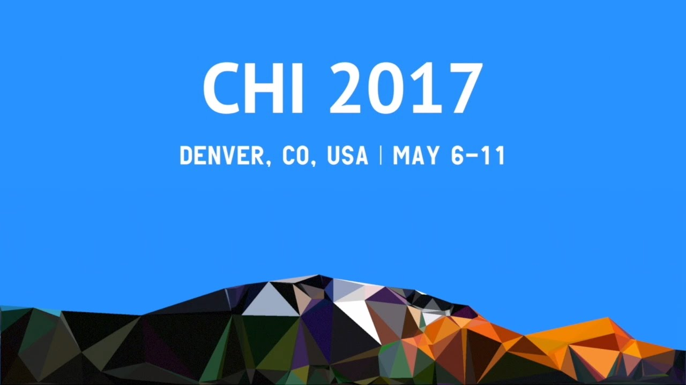

EnseWing: Creating an Instrumental Ensemble Playing Experience for Children with Limited Music Training
CHI '17: Proceedings of the 2017 CHI Conference on Human Factors in Computing Systems
Video Coding, Data Analysis & Behavior Analysis
Beijing
Sept. 2015 - Mar. 2016

DESCRIPTION
While instrumental ensemble playing can benefit children’s music education and collaboration skill development, it requires extensive training on music and instruments, which many school children lack. To help children with limited music training experience instrumental ensemble playing, we created EnseWing, an interactive system that offers such an experience. In this paper, we report the design of the EnseWing experience and a two-month field study. Our results show that EnseWing preserves the music and ensemble skills from traditional instrumental ensemble and provides more collaboration opportunities for children.
My work in this paper primary focus on video coding and behavior analysis.

WHAT I DID
We deployed EnseWing in an elementary school and included six children in the study. A music teacher was invited to be the conductor for the study. She planned their training according to their progress, and, most importantly, directed the ensemble rehearsal where detailed coordination was coached to reach harmony. The ensemble class had 14 90-minute sessions in two months. The whole process was video recorded. My works is to analysis the video.
VIDEO CODING
I analyzed all videos using a video coding tool, Datavyu. My job is to observe children's behavior at different times, and find sufficient evidence to explain the changing in their ability and consciousness.
CLASSIFICATION
Combined with my experience in instrument performance and chorus, I put forward an idea that obtaining awareness and acquiring skills should be separated. Children always obtain awareness before they acquire a specific skills. So that our obtained ten codes can be put into four categories: music awareness and skills, instrumental ensemble awareness and skills, collaboration, and overall experience.
children’s learning process and my observations
I conducted a statistical analysis of children's various abilities and awareness, including solo and ensemble ability. From beats awareness to rhythm acquisition ability and so on.